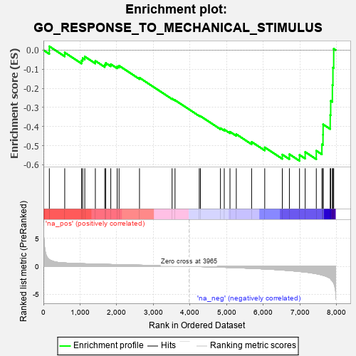
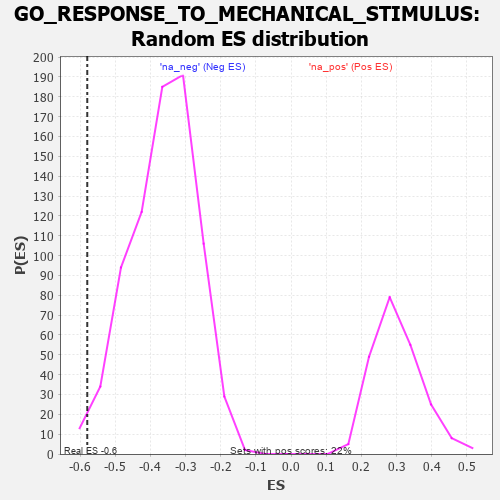

| | | Dataset | 7d |
| Phenotype | NoPhenotypeAvailable |
| Upregulated in class | na_neg |
| GeneSet | GO_RESPONSE_TO_MECHANICAL_STIMULUS |
| Enrichment Score (ES) | -0.5794857 |
| Normalized Enrichment Score (NES) | -1.6021465 |
| Nominal p-value | 0.011597938 |
| FDR q-value | 0.09472096 |
| FWER p-Value | 1.0 |
Table: GSEA Results Summary

Fig 1: Enrichment plot: GO_RESPONSE_TO_MECHANICAL_STIMULUS
Profile of the Running ES Score & Positions of GeneSet Members on the Rank Ordered List
| PROBE | GENE SYMBOL | GENE_TITLE | RANK IN GENE LIST | RANK METRIC SCORE | RUNNING ES | CORE ENRICHMENT | | 1 | CSRP3 | | | 161 | 1.186 | 0.0198 | No |
| 2 | CCNB1 | | | 581 | 0.601 | -0.0127 | No |
| 3 | AKT1 | | | 1040 | 0.476 | -0.0544 | No |
| 4 | XPA | | | 1070 | 0.469 | -0.0422 | No |
| 5 | SRC | | | 1128 | 0.459 | -0.0339 | No |
| 6 | P2RY1 | | | 1416 | 0.407 | -0.0564 | No |
| 7 | BACE1 | | | 1673 | 0.360 | -0.0764 | No |
| 8 | ERCC8 | | | 1699 | 0.357 | -0.0675 | No |
| 9 | GATA4 | | | 1837 | 0.330 | -0.0737 | No |
| 10 | RAF1 | | | 2011 | 0.303 | -0.0852 | No |
| 11 | MEIS2 | | | 2063 | 0.296 | -0.0817 | No |
| 12 | BAG3 | | | 2620 | 0.209 | -0.1446 | No |
| 13 | XPC | | | 3509 | 0.076 | -0.2539 | No |
| 14 | MAPK3 | | | 3589 | 0.062 | -0.2618 | No |
| 15 | LRP11 | | | 4250 | -0.050 | -0.3433 | No |
| 16 | WNT11 | | | 4282 | -0.056 | -0.3453 | No |
| 17 | CNN2 | | | 4828 | -0.163 | -0.4084 | No |
| 18 | CASP1 | | | 4932 | -0.185 | -0.4152 | No |
| 19 | DRD2 | | | 5088 | -0.221 | -0.4272 | No |
| 20 | SCN1A | | | 5260 | -0.261 | -0.4400 | No |
| 21 | CASP8 | | | 5678 | -0.369 | -0.4800 | No |
| 22 | RAC1 | | | 6036 | -0.484 | -0.5087 | No |
| 23 | TRPV4 | | | 6515 | -0.668 | -0.5463 | No |
| 24 | EGFR | | | 6708 | -0.765 | -0.5447 | No |
| 25 | PDE2A | | | 6985 | -0.927 | -0.5482 | Yes |
| 26 | WHRN | | | 7139 | -1.025 | -0.5329 | Yes |
| 27 | CASP2 | | | 7442 | -1.322 | -0.5263 | Yes |
| 28 | ASNS | | | 7595 | -1.547 | -0.4933 | Yes |
| 29 | TRPA1 | | | 7625 | -1.608 | -0.4426 | Yes |
| 30 | PKD1 | | | 7628 | -1.611 | -0.3885 | Yes |
| 31 | PKD2 | | | 7822 | -2.167 | -0.3397 | Yes |
| 32 | KCNC1 | | | 7835 | -2.249 | -0.2653 | Yes |
| 33 | FYN | | | 7881 | -2.622 | -0.1825 | Yes |
| 34 | CAV3 | | | 7896 | -2.739 | -0.0918 | Yes |
| 35 | ASIC2 | | | 7917 | -2.995 | 0.0068 | Yes |
Table: GSEA details [plain text format]

Fig 2: GO_RESPONSE_TO_MECHANICAL_STIMULUS: Random ES distribution
Gene set null distribution of ES for GO_RESPONSE_TO_MECHANICAL_STIMULUS